A list of top frequently asked HTML interview questions and
HTML5 interview questions and answers are given below.
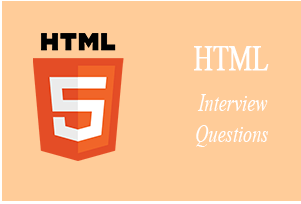
HTML stands for Hyper Text Markup Language. It is a language of World Wide Web. It is a standard text formatting language which is used to create and display pages on the Web. It makes the text more interactive and dynamic. It can turn text into images, tables, links. More details
HTML tags are composed of three things: an opening tag, content and ending tag. Some tags are unclosed tags.
HTML documents contain two things:
When a web browser reads an HTML document, the browser reads it from top to bottom and left to right. HTML tags are used to create HTML documents and render their properties. Each HTML tags have different properties.
Content is placed between tags to display data on the web page
More details
No. There are some HTML tags that don't need a closing tag. For example: <image> tag, <br> tag. More details.
The HTML formatting is a process of format the text for a better look and feel. It uses different tags to make text bold, italicized, underlined. More details
The HTML contains six types of headings which are defined with the <h1> to <h6> tags. Each type of heading tag displays different text size from another. So, <h1> is the largest heading tag and <h6> is the smallest one. For example:
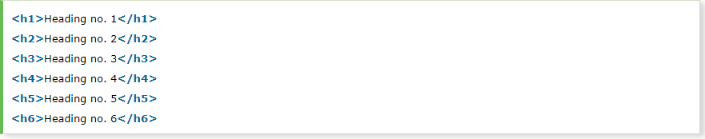The HTML provides an anchor tag to create a hyperlink that links one page to another page. These tags can appear in any of the following ways:
The HTML table tag is used to display data in tabular form (row * column). It also manages the layout of the page, e.g., header section, navigation bar, body content, footer section. Here is the list of tags used while displaying the data in the tabular form:
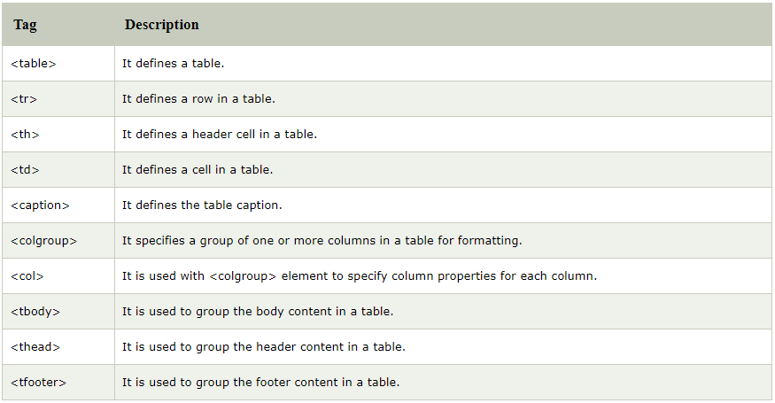There are many common lists which are used to design a page. You can choose any or a combination of the following list types:
HTML elements communicate to the browser to render text. When the elements are enclosed by brackets <>, they form HTML tags. Most of the time, tags come in a pair and surround content.
Semantic HTML is a coding style. It is the use of HTML markup to reinforce the semantics or meaning of the content. For example: In semantic HTML <b> </b> tag is not used for bold statement as well as <i> </i> tag is used for italic. Instead of these we use <strong></strong> and <em></em> tags.
Image map facilitates you to link many different web pages using a single image. It is represented by
You can insert a copyright symbol by using © or © in an HTML file.
The HTML iframe tag is used to display a nested webpage. In other words, it represents a webpage within a webpage. The HTML <iframe> tag defines an inline frame. For example:
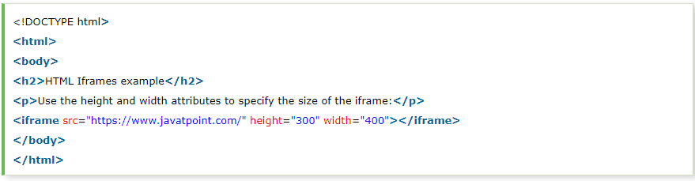You can keep the list elements straight by using indents.
No, you can use hyperlinks on text and images both. The HTML anchor tag defines a hyperlink that links one page to another page. The "href" attribute is the most important attribute of the HTML anchor tag.
A style sheet is used to build a consistent, transportable, and well-designed style template. You can add these templates on several different web pages. It describes the look and formatting of a document written in markup language.
Yes. To create a multicolor text on a web page you can use <font color ="color"> </font> for the specific texts you want to color.
The color of the bullet is always the color of the first text of the list. So, if you want to change the color of the bullet, you must change the color of the text.
HTML layout specifies a way in which the web page is arranged.
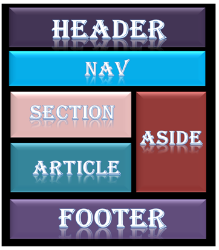Every website has a specific layout to display content in a specific manner. Following are different HTML5 elements which are used to define the different parts of a webpage.
Marquee is used to put the scrolling text on a web page. It scrolls the image or text up, down, left or right automatically. You should put the text which you want to scroll within the <marquee>......</marquee> tag. More details.
Three tags are used to separate the texts.
To make a picture a background image on a web page, you should put the following tag code after the </head> tag.
Here, replace the "image.gif" with the name of your image file which you want to display on your web page.
HTML elements with no content are called empty elements. For example: <br>, <hr> etc.
The span tag is used for following things:
An iframe is used to display a web page within a web page.
The HTML character entities are used as a replacement for reserved characters in HTML. You can also replace characters that are not present on your keyboard by entities. These characters are replaced because some characters are reserved in HTML.
An URL is encoded to convert non-ASCII characters into a format that can be used over the Internet because a URL is sent over the Internet by using the ASCII character-set only. If a URL contains characters outside the ASCII set, the URL has to be converted. The non-ASCII characters are replaced with a "%" followed by hexadecimal digits.
No, the <!DOCTYPE html> declaration is not an HTML tag. There are many type of HTML e.g. HTML 4.01 Strict, HTML 4.01 Transitional, HTML 4.01 Frameset, XHTML 1.0 Strict, XHTML 1.0 Transitional, XHTML 1.0 Frameset, XHTML 1.1 etc. So, <!DOCTYPE html> is used to instruct the web browser about the HTML page.
Let's see a list of top HTML5 interview questions and answers.
The <canvas> element is a container that is used to draw graphics on the web page using scripting language like JavaScript. It allows for dynamic and scriptable rendering of 2D shapes and bitmap images. There are several methods in canvas to draw paths, boxes, circles, text and add images. For Example:
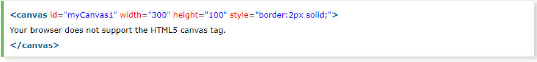HTML SVG is used to describe the two-dimensional vector and vector/raster graphics. SVG images and their behaviors are defined in XML text files. So as XML files, you can create and edit an SVG image with the text editor. It is mostly used for vector type diagrams like pie charts, 2-Dimensional graphs in an X, Y coordinate system.
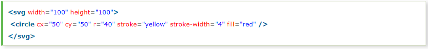Following is a list of 10 frequently used new elements in HTML 5:
No. Almost all browsers (updated versions) support HTML 5. For example Chrome, Firefox, Opera, Safari, IE.
HTML 5 supports three types of video format:
Yes. It is used to add sound or music files on the web page. There are three supported file formats for HTML 5 audio tag.
Let's see the code to play mp3 file using HTML audio tag.
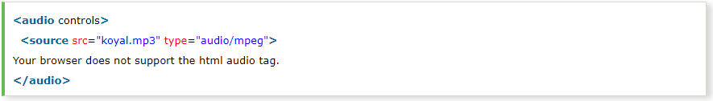Instead of koyal.mp3, you can pass any mp3 file name.
More detailsThe progress tag is used to represent the progress of the task only while the meter tag is used to measure data within a given range. More details
The figure tag is used to add a photo in the document on the web page. It is used to handle the group of diagrams, photos, code listing with some embedded content.
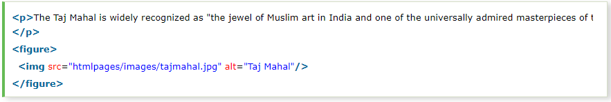The <figcaption> element is used to provide a caption to an image. It is an optional tag and can appear before or after the content within the <figure> tag. The <figcaption> element is used with <figure> element and it can be placed as the first or last child of the <figure> element.
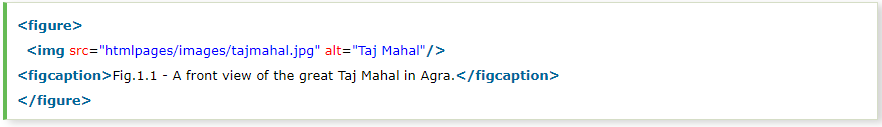The button tag is used in HTML 5. It is used to create a clickable button within the HTML form on the web page. It is generally used to create a "submit" or "reset" button. Let's see the code to display the button.
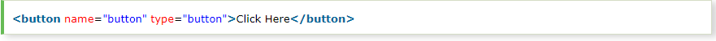The details tag is used to specify some additional details on the web page. It can be viewed or hidden on demand. The summary tag is used with details tag. More details
The HTML 5 datalist tag provides an autocomplete feature on the form element. It facilitates users to choose the predefined options to the users to select data.
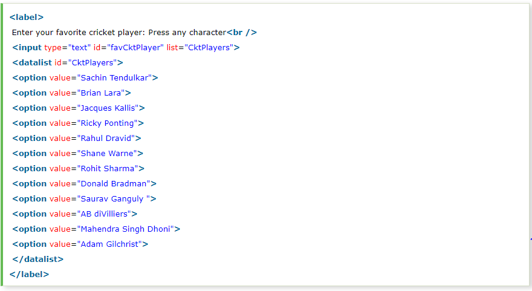No, the browser will not be able to identify that it is an HTML document and HTML 5 tags do not function properly..
It forces a user to fill text on the text field or text area before submitting the form. It is used for form validation.
The new input types for form validation are email, URL, number, tel, and date.